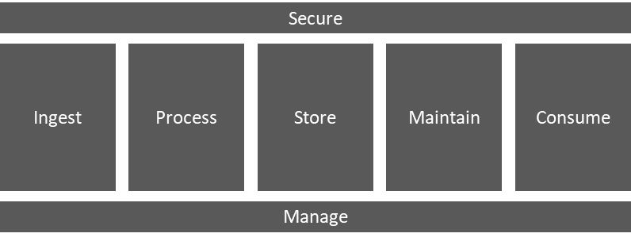

Azure Data Platform - Capabilities that enterprises are waiting for

Data solutions and data architectures encompass key areas in data management and provide guidance on how we ingest the data, process the data, store the data, maintain the data, consume the data, secure the data and manage the data. That is the life-cycle of the most data analytics projects and systems. Below image represents the conceptualized journey of data for analytics and BI projects.

Microsoft is fully invested in making Azure one of the most robust data platform in the industry. It has developed tools and offerings on cloud that can operate at scale and provide the necessary data ingestion, processing, storing and consumption options. From adding key capabilities in Azure Data Factory and making Power BI the most versatile BI tool in the industry, Microsoft has most of the ingredients for data processing.
Industry has also witnessed the new Microsoft philosophy the way Azure data platform has evolved in last few years. Microsoft is not shy of deprecating some the products it has build and that is from the fact that one of the key PaaS offering from Microsoft “Azure Data Lake Analytics” (ADLA) is no longer recommended as the processing option of choice for big data processing. Microsoft adopted spark in HDInsight and gave customers option to process the data using open source frameworks. With the adoption and full-scale integration of Data Bricks, the HDInsight has also taken a back seat.
However, there are some obvious gaps in data management and maintenance space in Azure. Following are the two things that I feel are missing from the current landscape of Azure and will hopefully be on to-do list of Microsoft
Metadata Management
When it comes to managing and maintaining the data in the ecosystem, I feel there is something Azure can do better. Managing the data can be correlated to Metadata Management which encompasses, glossary, metadata management and data lineage. Microsoft does have a solution called “Azure Data Catalog”, but that seriously lacks features and capabilities that an enterprise need. It does connect with most of the Azure sources but does have full fledged metadata tags that can be used. It does not have any capability in Data Lineage and data discovery and source system scans are almost nonexistent. The surprising part is that the tool has not seen any updates in almost 2 years now. We are waiting to hear for some answers around this. Is Microsoft going to refresh the tool any time soon? Is there a possible acquisition? We will have to wait for the answer.
Master Data Management
There is no service in Azure that provide Master Data Management (MDM) capabilities. Microsoft’s SQL Server Master Data Services (MDS) is for SQL Server on-prem only and can not be ported to Azure. Industry has seen growth in number of tools in this space, but we have not seen any offerings that customers can use on Azure. Azure Marketplace has very few Master data offering such as Profisee Master Data Management: Maestro Server V6 and Omni-Gen™ Master Data Management Edition. I feel that this is the space Microsoft is not planning to put any energy and leave it to some of the industry leaders.
Microsoft needs offerings in this area. It can be partnerships or acquisitions or building something grounds up. It will be interesting to see how things play out.